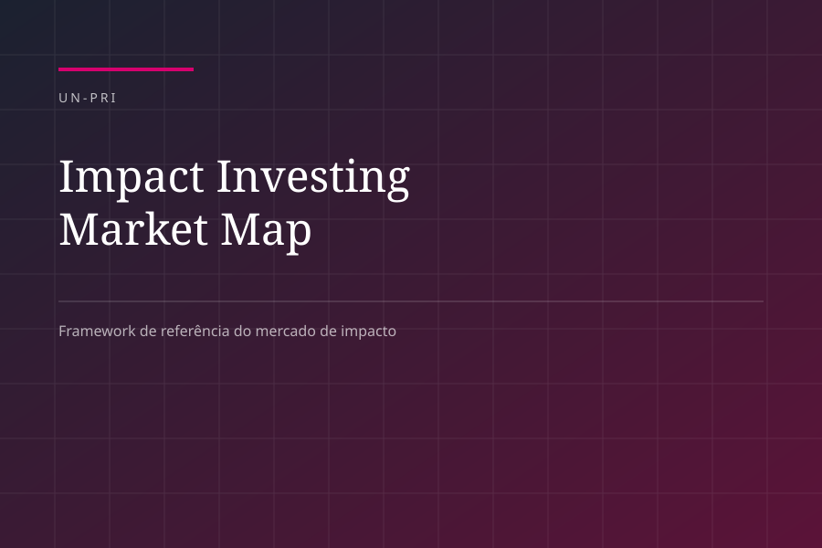
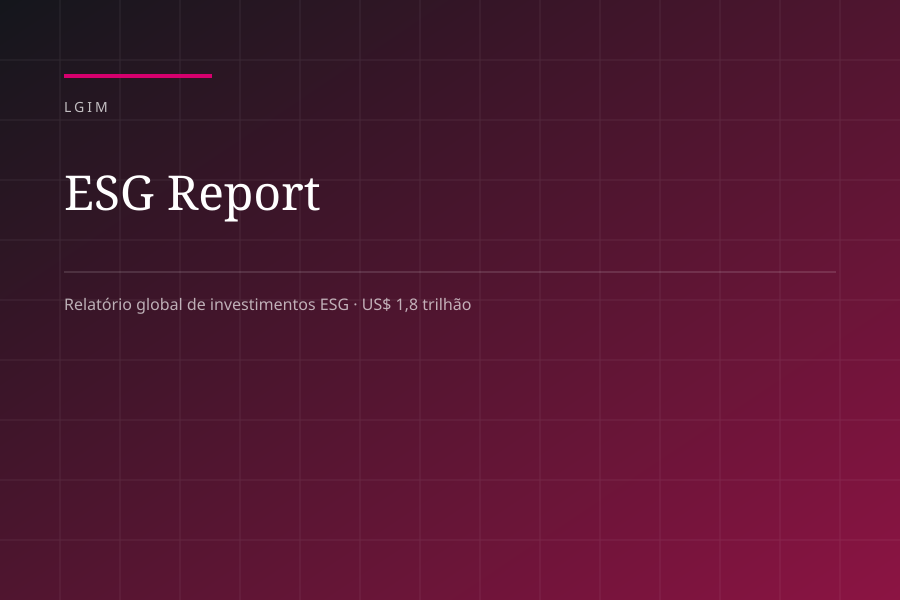
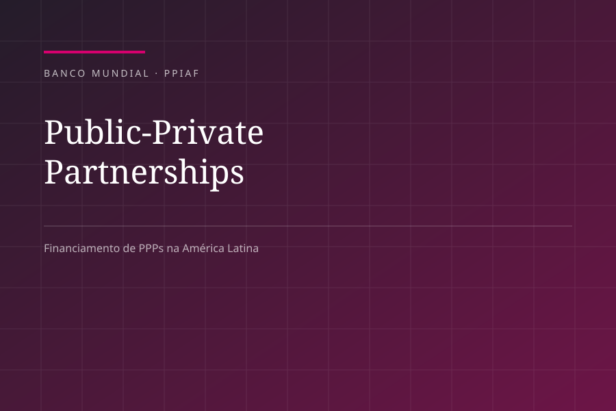

Materiais do LIIN e da sua equipe
Smart Reports, pesquisas e estudos sobre o mercado de ESG, além de publicações internacionais assinadas pela liderança do LIIN.

Impactos econômicos das regulações de ESG
Efeitos taxativos que passam a valer em 2026 para empresas e municípios: CBAM, Lei 15.042/24, custo de capital e exportações.
Ler edição →
Mercosul e União Europeia: impacto tectônico para as empresas de SC
O acordo entre os blocos, os capítulos de compliance ESG e o efeito sobre as cadeias exportadoras catarinenses.
Ler edição →
Radar regulatório
Quarenta regulações nacionais e internacionais monitoradas, com data de efeito, critérios e consequência por perfil institucional.
Conhecer →
Impact Investing Market Map
Framework de investimento de impacto reconhecido pelo governo britânico entre os mais relevantes do setor.
Acessar →
LGIM ESG Report
Relatório global de investimentos ESG da gestora, com US$ 1,8 trilhão em ativos sob gestão.
Acessar →
Public-Private Partnerships Financing in Latin America
Prefácio assinado na publicação do Banco Mundial e do PPIAF sobre financiamento de PPPs na região.
Acessar →